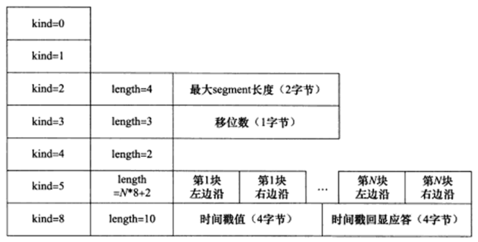
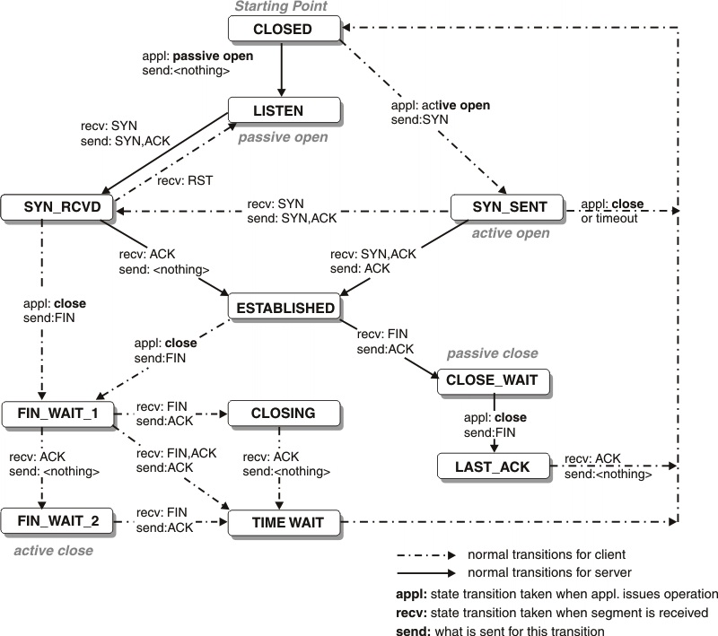
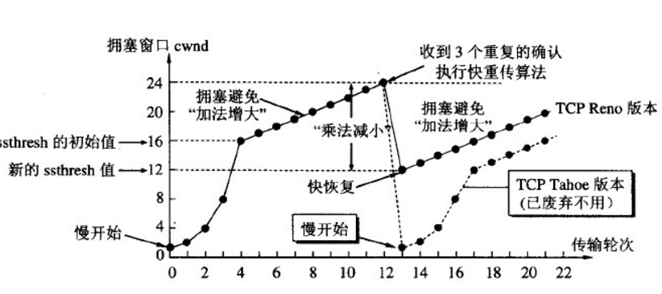
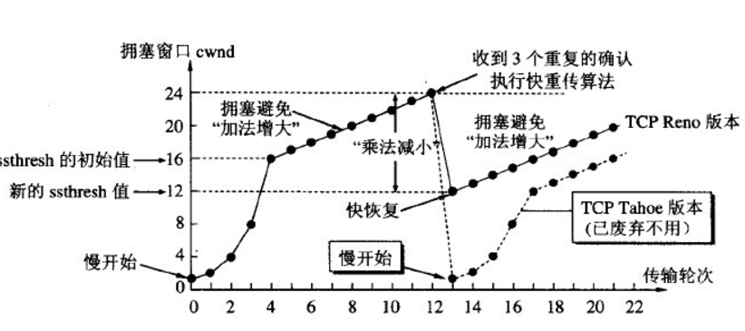
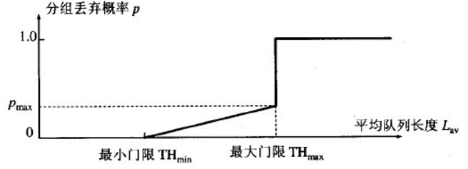
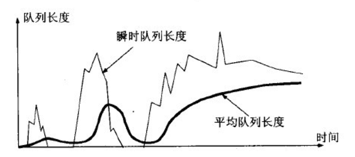

TCP那些事儿
- TCP HEADER
- TCP 状态转移
- TCP 流控
- 超时重传RTO（Retransmission timeout）
- 拥塞控制算法 congestion control algorithm
- 随机早期检测RED
- 锐速
面向连接，一对一，所以基于广播和多播的应用程序不能使用TCP服务。而无连接的UDP则非常适合广播和多播。
- 字节流，TCP 字节流，send()写recv()读次数没有固定关系，UDP 数据报，sendto()写recvfrom()读次数相同。
- 可靠传输。
传输层-Segment, 网络层-Packet, 链路层-Frame
TCP HEADER

- 32位序号sequence number, ISN + byte offset of the first byte in the packet
- ISN initial sequence number, random generated
- 4 bit header length: unit 32bit
- min = 4 * 5 = 20
- max = 4 * 15 = 60
- Flags
- URG
- ACK
- PSH
- RST
- SYN
- FIN
- RWND receiver window
- checksum crc(header + data)
- options <= 40 byte

- kind 1, length 1, info n
- kind:
- 0 terminate
- 1 nop
- 2 MSS(Max Segment Size), 以太网MTU为1500字节，减去TCP、IP头部40字节，MSS还剩1460字节。
- 3 window scale, 0~14, /proc/sys/net/ipv4/tcp_window_scaling only for syn, rfc1323
- 4 sack-permitted only in syn, /proc/sys/net/ipv4/tcp_sack
- 5 sack content
- 8 timestamp for rtt calculation /proc/sys/net/ipv4/tcp_timestamps
sack （tcp selective acknowledgments）
选择性确认，可通过 /proc/sys/net/ipv4/tcp_sack 配置开关。Linux 2.4以后默认打开，不过需要两边都打开才能生效。
发生丢包以后，发送端要么重传所有从丢包的包以后的所有包，要么发送丢失的包以后再等待一个RTT时间来发现下一个要传的包。
选择确认机制就是为了解决这个问题。接收端可以告诉发送端哪些包收到了，发送端只需要发送未收到的包即可。提高了效率。
TCP 状态转移

主动断开连接的一方，在连接关闭以后进入TIME_WAIT状态, 需要等待2*MSL(Maximum Segment Life) 报文段最大生存时间，rfc1122建议2min。 TIME_WAIT存在的原因：
- 可靠的终止TCP连接。
- 保证让迟来的TCP报文段有足够的时间被识别并丢弃。
服务器主动关闭连接后，监听的端口处于TIME_WAIT状态导致它不能立即重启，需要设置socket选项SO_REUSEADDR来强制进程立即使用处于TIME_WAIT状态占用的端口。 正常终止连接需要四步握手。TCP还提供了异常终止连接的办法，即给对方发送一个复位报文段。一旦发送了复位报文段，发送端素有排队等待发送的数据都将被丢弃。 应用程序可以使用socket选项SO_LINGER来发送复位报文段，以异常终止一个连接。
TCP 流控
发送方如果发送太快导致接收端来不及接收就会导致丢包。流量控制就是让发送方发送速率不要太快，要让接收方来得及接收。 TCP使用滑动窗口机制来实现对发送方的流量控制。
- 滑动窗口 Sliding Window
接收端向发送端通告自己的接收窗口rwnd大小，表示接收方能够接收的字节数。
发送端维护一个发送窗口swnd，保存已发送且尚未收到ack的包。发送窗口不大于接收方的rwnd。
当接收窗口为0的时候，发送端需要设置持续计时器，persistence timer, 触发发送ZWP(Zero Window Probe)探测包接收端的接收窗口大小（Zero Window Probe Ack）。
wireshark中使用tcp.analysis.zero_window过滤包，然后后右键follow TCP stream攻击者跟服务器建立连接后发送GET请求，然后将窗口设置为0，服务端只能等待进行ZWP，攻击者并发大量这样的请求，把服务器资源耗尽(sockstress)。
中间两者加起来就是发送窗口。- 已经收到ack确认的数据 - 已经发送但是未收到ack确认的数据 - 可以发送的数据（接收方还有空间） - 不能发送的数据（接收方没有空间） - Nagle算法(TCP_NODELAY) RFC896 (Congestion Control in IP/TCP internetworks)
- if there are unacknowledged in-flight data, new data is buffered
- if the data to be send is < MSS, it is buffered until MSS
When to send data (rfc 1122)
- Immediately if a full MSS size package can be sent (at least MSS data is accumulated)
- All previously sent data has been acknowledged AND ((PSH flag is set) OR buffered data > 1/2 * send window)
- PSH flag is set AND the override timeout(0.1 ... 1s) expired 针对小包应用的优化。发送方发包的时机，发送方收到对方上一个包的确认后才发送下一个包。确认快那么发送也快，确认慢则发送慢， 可以根据网速动态调整速率。网速慢时可以显著减少网络上报文的数量。对于实时性要求高的应用如telnet，ssh，mmoarpg，应该要关闭Nagle算法。 糊涂窗口综合征 Silly Window Syndrom 接收窗口已满，而交互式应用一次只从接收缓存中读取一个字节，然后向发送方发送确认，并把窗口设置成1个字节。如此往复，网络效率低。 解决的办法是避免对小的window size做出响应，知道有足够大的window size再响应： 接收方：David D Clark's方案，等到缓存有足够的空间容纳一个MSS，或者接收缓存已有一半空闲空间的时候才想发送端回确认报文。 发送端：Nagle's algorithm 不要发送太小的报文，而是把数据报累积成足够大的报文段，或者达到接收方缓存空间一半大小。 Nagle + Delay ack 导致延迟 ACK is delayed until return data is available(piggy-backing of ack) or until delayed ack timer expires
超时重传RTO（Retransmission timeout）
RTO计算方法见Computing TCP's Retransmission Timer，主要维护两个变量：
- SRTT: smoothed round-trip time
- RTTVAR: round-trip time variation
计算过程如下：
初始化先设置：
RTO = 1 or 3 seconds;报文超时，重传以后设置改报文新的超时时间为：
RTO = RTO * 2 (back off the timer)更新srtt和rttvar之后，计算新的rro：
RTO = SRTT + max(G, K*TRRVAR); RTO < 1 then RTO = 1; RTO > 60 then RTO = 60;
srtt和rttvar的计算过程如下：
- 收到第一个ACK以后，设置：
SRTT = R;
RTTVAR = R / 2;
- 收到后续的ACK，依次设置：
其中RTTVAR = (1 - bata) * RTTVAR + bata * |SRTT - R'|; SRTT = (1 - alpha) * SRTT + alpha * R';alpha = 1/8, beta = 1/4
不能用重传的包来计算rtt, 因为无法确定包是哪个时间点发出的，除非包本身有timestamp。
拥塞控制算法 congestion control algorithm
最大化网络上瓶颈链路的带宽。提高网络利用率，降低丢包率，保证公平性。RFC5681
- 慢启动和拥塞避免 slow start and congestion avoidance
- 快速重传和快速恢复 fast retransmit / fast recovery
Linux下课通过sysctl查看使用的拥塞算法，
$ sysctl -a | grep congestion_control net.ipv4.tcp_congestion_control = cubic net.ipv4.tcp_available_congestion_control = cubic reno net.ipv4.tcp_allowed_congestion_control = cubic reno
通过 /proc/sys/net/ipv4/tcp_congestion_control 可以控制使用的拥塞算法。
主要的实现算法有:
- loss based congestion control (bufferbloat problem)
- reno
- vegas
- cubic 看了下centos下都是cubic
- bbr (Bottleneck Bandwidth and RTT)google最新推出的
if CWND < ssthresh slow start cwnd每个rtt扩大一倍，指数扩大
- IW
- CWND += min(N, SMSS)
if CWND > ssthresh
- CWND += SMSS*SMSS/CWND cwnd每个rtt加1
早期拥塞避免阶段的cwnd计算公式为：cwnd += (MSS * MSS / cwnd) + MSS/8，
rfc2525指出了Extra additive constant in congestion avoidance，带来的问题，
即公式后面多余的部分会导致一个RTT内多个包丢失而无法通过快速重传恢复，从而导致超时重传，从而降低性能。
正确的做法应该是去掉后面的部分：cwnd += (MSS * MSS / cwnd)。
如果CWND=ssthresh，慢启动或者拥塞避免随意。
发送端判断拥塞：
- 传输超时，tcp重传定时器溢出：慢启动和拥塞避免
- ssthresh = max(FlightSize/2, 2*MSS)
- CWND <= SMSS
- 再次进入慢启动

- 接收到重复的确认报文：快速重传，快速恢复
- 接收端收到失序报文立即发送重复确认，而不必等待自己发送数据时捎带确认
- 发送端收到前两个重复确认时，在允许的情况下应该发送一个之前尚未发送的数据包，(FlightSize <= cwnd+2*MSS), CWND保持不变。
- 发送端收到3个重复确认报文立即重发对方未收到的报文，而不必等待超时。 ssthresh=max(FlightSize/2, 2MSS), CWND = ssthresh + 3MSS，加3是因为收到了3个重复ack报文，意味着有三个报文离开了网络。
- 每收到一个重复确认：CWND = CWND + SMSS，每收到一个重复确认，那么有一个报文离开了网络。
- 收到新数据确认：CWND = ssthresh
- 快速重传和快速恢复完成之后，恢复到拥塞避免阶段
 

BBR
传统的拥塞控制算法存在两个问题：
- 无法区分丢包类型，错误丢包和拥塞丢包
- 缓冲膨胀区问题
- 增加网络延时
- 缓冲区被填满而丢包 google新出的拥塞控制算法。
- 既然不容易区分拥塞丢包和错误丢包，TCP BBR 就干脆不考虑丢包。
既然灌满水管的方式容易造成缓冲区膨胀，TCP BBR 就分别估计带宽和延迟，而不是直接估计水管的容积。
在有一定丢包率的网络链路上充分利用带宽。
- 降低网络链路上的buffer占用率，从而降低延迟。
随机早期检测RED
random early detection
网络层的策略对拥塞控制算法影响最大的就是路由器的丢弃策略。在简单的情况下，路由器通常按照先进先出的策略处理到来的分组。 当路由器的缓存装不下分组的时候就丢弃到来的分组，这就叫尾部丢弃策略。这样会导致分组丢失，发送方认为网络产生阻塞。 当网络中存在很多TCP连接，若发生路由器的尾部丢弃，可能影响很多条TCP连接，结果就是很多TCP同一时间进入slow start状态。 这种情况称为全局同步。全局同步回事网络的通信量突然下降很多，而在网络恢复正常以后，通信量又突然增大很多。
为避免产生网络中的全局同步现象，路由器采用随机早期检测算法： 路由器的队列维持两个参数，队列最小门限min和最大门限max，每当一个分组到来的时候，RED就计算平均队列长度。然后分情况对待到来的分组：
- 平均队列长度小于最小门限，将新分组加入队列排队。
- 平均队列长度在min和max之间，按照概率丢弃分组。
- 平均队列长度大于max，丢弃分组。 以概率p随机丢弃分组，让拥塞控制只在个别的TCP连接上执行，因而避免全局性的拥塞控制。

RED的关键就是选择三个参数：最小门限，最大门限，丢弃概率以及计算平均队列长度。 平均队列长度采用加权的方法计算，跟计算RTT的策略一样。

锐速
一个TCP加速软件，被用来加速VPS。
wget -N --no-check-certificate https://raw.githubusercontent.com/91yun/serverspeeder/master/serverspeeder.sh && bash serverspeeder.sh
chattr -i /serverspeeder/etc/apx* && /serverspeeder/bin/serverSpeeder.sh uninstall -f
- /serverspeeder/bin/serverSpeeder.sh restart
- /serverspeeder/bin/serverSpeeder.sh start
- /serverspeeder/bin/serverSpeeder.sh stop
- /serverspeeder/bin/serverSpeeder.sh status
参考文献
- https://stackoverflow.com/questions/1803566/what-is-the-cost-of-many-time-wait-on-the-server-side
- TCP Congestion Control
- Low Extra Delay Background Transport (LEDBAT)
- Computing TCP's Retransmission Timer
- Linux高性能服务器编程
- https://git.kernel.org/pub/scm/linux/kernel/git/davem/net-next.git/commit/?id=0f8782ea14974ce992618b55f0c041ef43ed0b78
- http://netdevconf.org/1.2/slides/oct5/04_Making_Linux_TCP_Fast_netdev_1.2_final.pdf
- http://queue.acm.org/detail.cfm?id=3022184
- https://www.zhihu.com/question/53559433
- http://blog.csdn.net/dog250/article/details/52879298
- https://github.com/91yun/serverspeeder